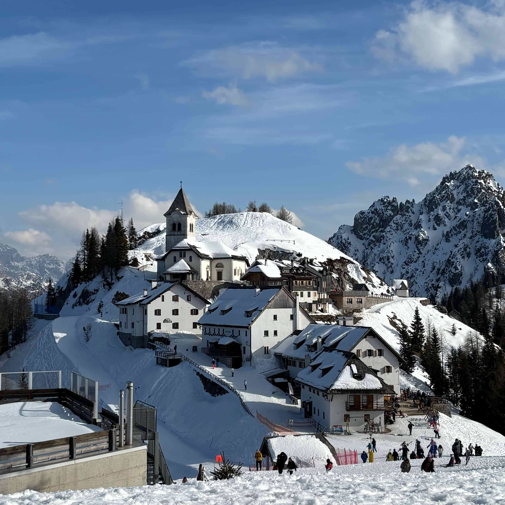
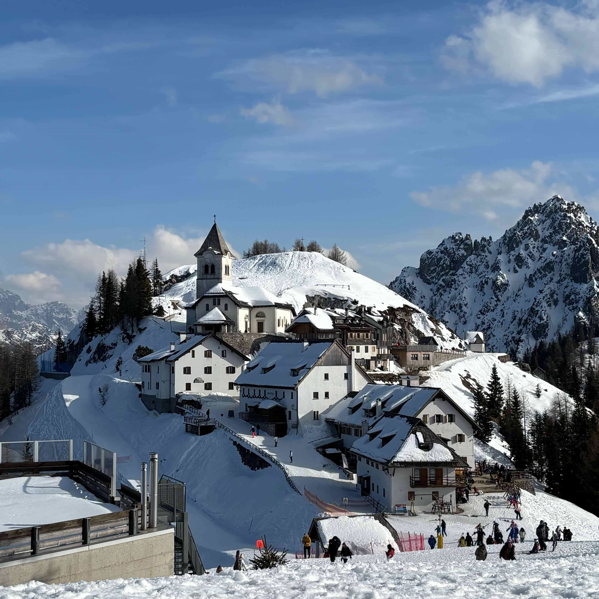

-
Passo Giau, Averau, Nuvolau, 5 Torri
Embarking on the Passo Giau, Averau, Nuvolau, and Cinque Torri hike is like stepping into a living postcard—except with more sweat and fewer postage stamps. This loop trail offers a delightful blend of jaw-dropping vistas, historical intrigue, and just the right amount of calf-burning elevation to remind you why you skipped leg day at the gym.
Read more → -
Cant del Gal to Rifugio Pradidali
Setting off on the Cant del Gal to Rifugio Pradidali hike is like auditioning for a role in a mountain adventure film—minus the stunt doubles and with a lot more huffing and puffing. This trail offers a delightful mix of serene forests, challenging ascents, and panoramic vistas that make every drop of sweat worth it.
Read more → -
Campanile di Val Montanaia from Rifugio Pordenone
Taking on the Campanile di Val Montanaia hike from Rifugio Pordenone is like stepping into a natural amphitheater where the mountains are the performers, and you're the captivated audience—albeit one that's slightly out of breath. This trail offers a blend of challenging ascents, breathtaking vistas, and a touch of geological whimsy that makes every hiker question their sanity in the best possible way.
Read more →